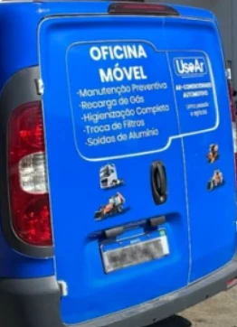

Menos deslocamento
Evite levar veículos de grande porte ou máquinas até a oficina.
A estrutura técnica da UseAr vai até empresas, transportadoras, fazendas, frotas e veículos que não podem se deslocar. Mais praticidade sem abrir mão do cuidado profissional.

Quando parar uma máquina, caminhão ou frota significa perder tempo e produtividade, o atendimento externo ajuda a agilizar a avaliação e a manutenção.
A equipe chega com ferramentas e equipamentos próprios para executar serviços compatíveis com o atendimento em campo, sempre com avaliação técnica antes do reparo.
Evite levar veículos de grande porte ou máquinas até a oficina.
Agendamento conforme o local, o tipo de veículo e a necessidade.
Possibilidade de avaliar mais de um veículo no mesmo endereço.
Converse com a equipe e explique o cenário antes da visita.
Após entender a necessidade, a equipe confirma o que pode ser realizado no local e prepara os equipamentos para o atendimento.
Inspeções e cuidados que ajudam a evitar falhas e perda de rendimento.
Procedimento realizado após avaliação das condições e pressão do sistema.
Limpeza do sistema para melhorar a qualidade do ar dentro do veículo.
Substituição do filtro de cabine conforme o modelo e a necessidade.
Reparos técnicos compatíveis com a estrutura e as condições do local.
Diagnóstico inicial para identificar a solução adequada para o sistema.
Informe o tipo de veículo, o problema percebido e o local.
A equipe avalia as informações e confirma a viabilidade do atendimento externo.
Definimos data, período e orientações para receber a equipe.
A oficina móvel chega preparada para a avaliação e o serviço combinado.

A oficina móvel é indicada para locais onde o deslocamento do veículo é difícil, caro ou interfere diretamente na rotina de trabalho.
Para serviços que exigem mais tempo, equipamentos ou desmontagem, a unidade fixa oferece uma estrutura completa em Uberlândia.
Envie as informações do veículo, o endereço e o problema percebido para a equipe avaliar o atendimento.
Solicitar pelo WhatsApp